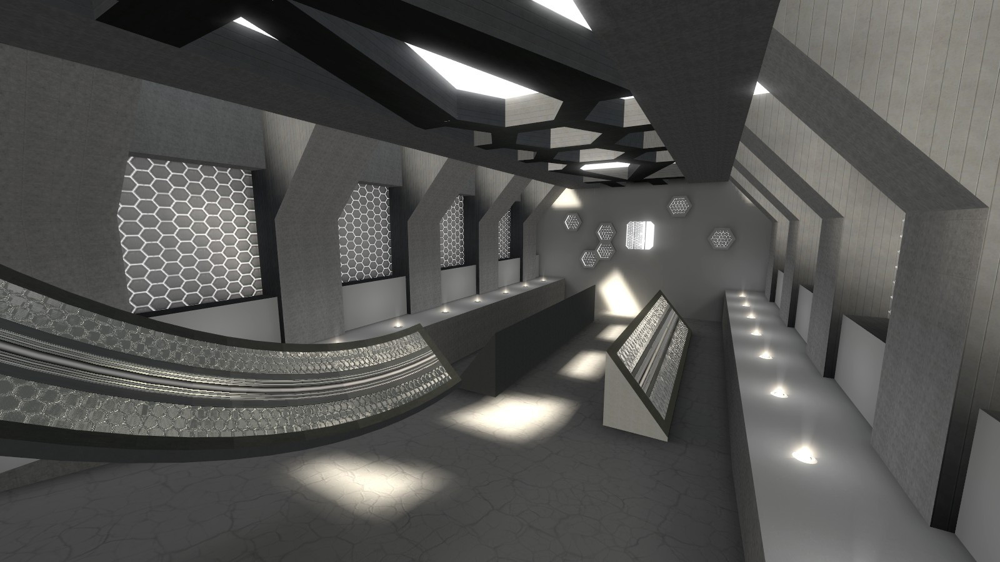
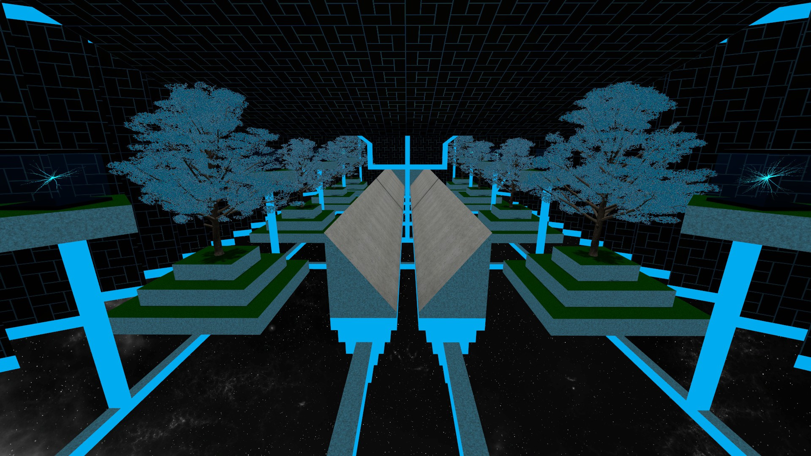
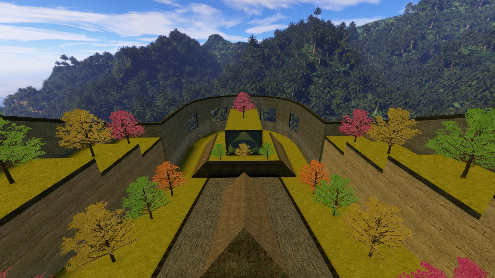

Sinner

Released ??/??/23
My entry (and hopefully the winner) of the KSF halloween mapping contest 2023. Showcase | Download
Kultur
Released 04/01/22
An extensive collaboration I hosted with a bunch of my friends. Six
stages getting progressively harder, and six unique bonuses.
This map is ideal for players of all skill levels due to the
progressing difficulty. It's a good map to test your ability in,
similar to surf_666.
The bonuses are incredibly varied, from easy surf to tier 7 surf, bhop
bonuses, and even KZ.
Showcase
|
Download
Enlightened
Released 18/03/21
A design carried over from bhop_enlightened and bhop_enlightened2.
This was my second map to ever make it onto the KSF servers. It's
about a minute long tier 1 linear map, designed with smooth surfing
and simple but effective aesthetics in mind.
The map also features multiple bonuses. Some made by myself, and
others made by my friends. Once again, a lot of variety in these
bonuses, and I think there is something for everyone here.
Showcase
|
Download
Sanctuary
Released 20/05/20
My first surf map to ever make it to KSF! A super colorful and unique
tier 2 map with 5 stages and 3 bonuses.
Features varied gameplay, visually pleasing design, immersive
ambience, and a route that both newbies and veterans alike can have
fun with.
I should also mention that B3 is notorious for being one of the harder
bonuses in Surf. You can thank ArcticPanda for that one.
Showcase
|
Download